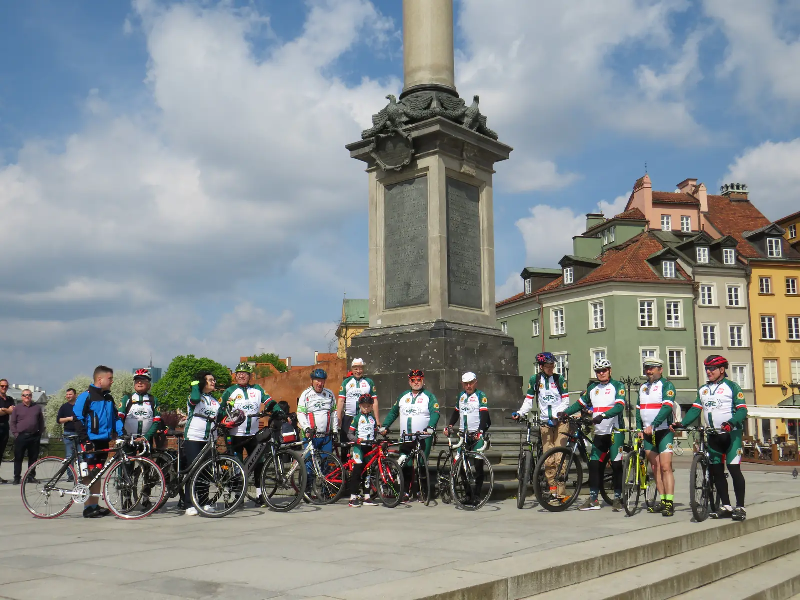
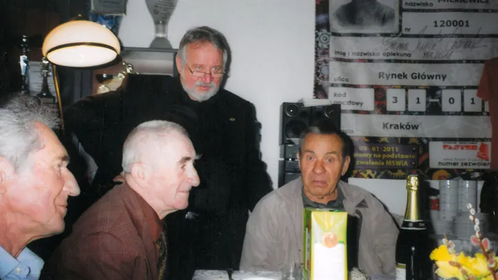

Rajdy i wyjazdy rowerowe
Wspólne trasy po Mazowszu i dalsze wyjazdy: Nałęczów, Busko-Zdrój, Nowe Miasto nad Pilicą, Suwalszczyzna.
Rowerem po śladach historii WTC, 2021tel. 794 000 544
biuro@wtc.waw.pl

Warszawskie Towarzystwo Cyklistów to jedno z najstarszych towarzystw sportowych w Polsce. Organizujemy wyścigi i wyjazdy rowerowe, a w każdą środę spotykamy się w siedzibie klubu.
Siedziba: ul. Jerzego Waldorffa 34, Warszawa
Jak dołączyć do WTCW Towarzystwie jeżdżą byli mistrzowie i obecni świetni cykliści. Razem wyjeżdżamy na trasy, startujemy w zawodach i pamiętamy o ważnych wydarzeniach kolarskich z ubiegłych lat.
Wspólne trasy po Mazowszu i dalsze wyjazdy: Nałęczów, Busko-Zdrój, Nowe Miasto nad Pilicą, Suwalszczyzna.
Rowerem po śladach historii WTC, 2021Otwarcie i zakończenie sezonu, Bielańska czasówka, mistrzostwa Polski cykloamatorów i wyścigi organizowane przez klub.
Zakończenie sezonu 2023Bicyklem po Nałęczowie śladami Bolesława Prusa, rajdy patriotyczne i rocznice Powstania Warszawskiego.
WTC i Bolesław Prus - bicyklem po Nałęczowie, 2024Co tydzień rozmawiamy o bieżącej działalności Towarzystwa i planujemy kolejne wyjazdy. W klubie działa też Koło Seniora.
Uroczystość wigilijna WTC, 2013Towarzystwo powstało w 1886 roku z inicjatywy Edwarda Chrapowickiego. Na początku miało charakter elitarny: niełatwo było dołączyć, a składki były wysokie. Członkami byli m.in. Bolesław Prus i Henryk Sienkiewicz.
WTC zakłada Edward Chrapowicki. Wśród członków są Bolesław Prus i Henryk Sienkiewicz.
Na zdjęciu: pokaz bicykla ze zbiorów WTC, Nałęczów 2024W Paryżu kolarze WTC zdobywają pierwszy w historii medal olimpijski dla Polski, w wyścigu na dystansie 4000 m.
Ekspozycja na skrzydle siedziby WTC, 2024Jeden z najbardziej oddanych sympatyków kolarstwa, od 1937 roku honorowy członek Poznańskiego Towarzystwa Cyklistów i Motorzystów. Dziadek obecnego prezesa WTC.
Od lewej: red. Bohdan Tomaszewski, Leon Bestry, sędziowie zawodów, 1 czerwca 1947W każdy piątek seniorzy spotykali się przy ul. Stefana Jaracza i rozmawiali o dawnych i współczesnych wydarzeniach. Rozmowom nie było końca.
Spotkanie Koła Seniora WTC, 198011 września 2024 roku w siedzibie przy ul. Jerzego Waldorffa 34 odbyła się uroczystość upamiętniająca medal olimpijski kolarzy WTC.
Na zdjęciu: rozpoczęcie sezonu 2024Mamy wiele planów, które powoli realizujemy, aby zapaść w pamięć przyszłym pokoleniom cyklistów. Zapraszamy wszystkich, którzy lubią jeździć na rowerze i chcą robić to w dobrym towarzystwie.

„Stwórzmy dużą grupę, która razem zwiększy bezpieczeństwo na drodze!”Dr hab. Jan Bestry, prezes WTC, o akcji „Jedziesz - Zapal Światło”
Kilka zdjęć z ostatnich sezonów. Pełne galerie z każdego rajdu i wydarzenia będą na osobnej podstronie, od najnowszych.
Wideo z majowej imprezy „WTC i Bolesław Prus - bicyklem po Nałęczowie” dla wszystkich, którzy nie zdążyli go jeszcze obejrzeć.
11 września 2024 roku w siedzibie WTC uczciliśmy pierwszy medal olimpijski dla Polski zdobyty przez kolarzy Towarzystwa.
Wspólnie ze Stowarzyszeniem Wzorem Ziemianek, Nałęczowskim Ośrodkiem Kultury i Gminą Nałęczów zaprosiliśmy na urodziny pisarza.
Warszawskie Towarzystwo Cyklistów 1886